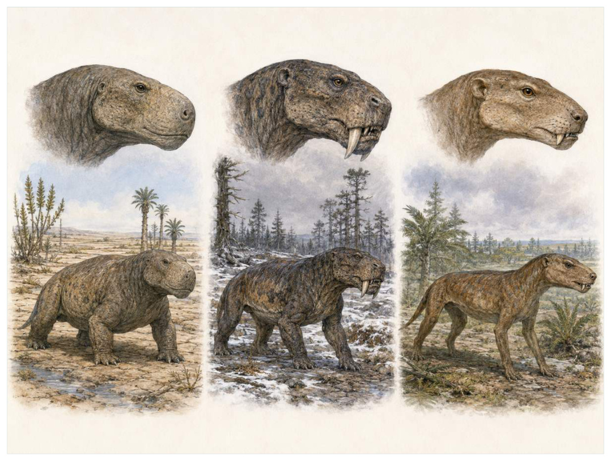

第09篇 · 二叠纪：恐龙以前的合弓类世界 · 第 30 章
兽孔类到犬齿兽：颌、牙与直立姿势的接力
本篇主题:二叠纪：恐龙以前的合弓类世界
盘古大陆上的干旱化、合弓类辐射和哺乳动物式结构的积累。

本章科学复原配图 （用于呈现结构与生态关系, 不替代化石照片、测量数据与系统发育证据。）
我们来到中二叠世至晚三叠世。最值得注意的不是“谁最强”，而是谁能把当时有限的能量转成更多存活后代。兽孔类并非一条整齐通往哺乳动物的队伍，而是包含大型植食二齿兽、剑齿般犬齿的丽齿兽、厚头食草者和多样犬齿兽的巨大辐射。通向哺乳动物的支系逐渐形成异型齿、次生腭、更直立四肢、扩大脑腔与高效呼吸；与此同时，原本构成下颌后部和颌关节的骨骼缩小并向中耳功能转移。每一步都在当时正常工作。
进入这个时代
生态系统的真实声音不是巨兽咆哮，而是持续的摄食、分解、搬运和繁殖。每一具尸体、每一层落叶和每一次沉积扰动都会重新分配资源。晚二叠世平原上，水牛大小的蚊齿兽和二齿兽啃食种子蕨，丽齿兽以巨大犬齿追逐猎物。较小犬齿兽可能在洞穴中活动，牙齿分成切、犬和颊齿，食物能被更细致处理。不同身体方案并存，没有谁知道哪一支会跨过大灭绝。
在“兽孔类到犬齿兽：颌、牙与直立姿势的接力”所覆盖的时间里，不能把地理与气候当作固定背景。海陆位置、海平面、河流或植被结构会改变资源可达性，同一性状在不同地区可能得到完全相反的选择结果。
以兽孔类到犬齿兽：颌、牙与直立姿势的接力为例，生态位不是预先摆好的空格，而是生物与环境共同形成的关系。掘穴者改变沉积物，森林固定河岸，礁体构建者制造硬底，巨型植食者改变火与养分。生物占据生态位的同时也在制造新的生态位。在本章中，这一约束具体落在“异型齿提高切割、撕裂和研磨的分工”这条关系上。
再从中二叠世至晚三叠世的时间尺度看，环境变化首先作用于生理边界。温度改变酶反应和耗氧量，氧气决定持续活动余量，酸碱度影响骨骼和外壳材料，水分则限制气体交换与胚胎发育。只有跨过这些底层约束，捕食和竞争才有机会决定谁占优势。它与“齿列分化与精确咬合”共同决定了后续变化可以沿哪些路径发生。
图 30-1 合弓类颌后部骨骼逐步转入哺乳动物中耳。
生态系统如何运转
“异型齿提高切割、撕裂和研磨的分工”还会改变可利用空间。一个支系若能进入新的水深、植被高度或沉积层，竞争会暂时减弱；随后追随者、捕食者和寄生者又会把新空间变成新的互动网络。
围绕“异型齿提高切割、撕裂和研磨的分工”，从演化树看，相似关系可能在远亲中反复出现。功能相近不必意味着近缘，而同一祖先结构也可能被后代改作完全不同的用途；生态解释必须与系统发育互相校验。 对兽孔类到犬齿兽：颌、牙与直立姿势的接力而言，这一后果还会与“次生腭允许咀嚼时继续呼吸”相互放大或抵消。
把“次生腭允许咀嚼时继续呼吸”放进食物网，可以看到它不是孤立行为。它会影响种群密度、栖息地使用和尸体进入分解链的速度，并把后果传给并未直接参与互动的物种。
围绕“次生腭允许咀嚼时继续呼吸”，当环境快速越过生理阈值时，原有互动甚至来不及通过适应重新平衡。此时灭绝的选择性会更多取决于分布、食物来源和繁殖速度，而不是平时竞争中的相对强弱。 对兽孔类到犬齿兽：颌、牙与直立姿势的接力而言，这一后果还会与“四肢向身体下方移动提高持续活动与承重”相互放大或抵消。
理解“四肢向身体下方移动提高持续活动与承重”需要区分个体事件与长期压力。偶然一次捕食只改变个体命运，持续数千代的稳定关系才可能推动牙齿、外壳、感觉器官或生活史发生方向性变化。
围绕“四肢向身体下方移动提高持续活动与承重”，这种关系没有永恒赢家。收益随密度和环境改变：防御越常见，攻击专门化的价值越高；资源越稀少，维持昂贵结构的代价越大。化石记录中的扩张与衰退，常是这种动态平衡被外部事件打破的结果。 对兽孔类到犬齿兽：颌、牙与直立姿势的接力而言，这一后果还会与“异型齿提高切割、撕裂和研磨的分工”相互放大或抵消。
关键演化创新
在“兽孔类到犬齿兽：颌、牙与直立姿势的接力”中，围绕“齿列分化与精确咬合”，“齿列分化与精确咬合”一旦出现，还会改变其他物种的环境。新的捕食方式、取食高度或繁殖场所会制造选择压力，促使整个群落而不只是发明者发生响应。 它首先需要在中二叠世至晚三叠世的生态条件下产生可测量收益。
就“齿列分化与精确咬合”而言，化石能较可靠地记录硬组织形态，却很少直接保留基因调控与短时行为。因此结构出现通常可信，最初用途和选择路径则应按证据标为主流解释或合理推测。 本章把它与“次生腭和鼻腔分隔”并列，是为了显示复杂性状往往依赖多部分协同。
在“兽孔类到犬齿兽：颌、牙与直立姿势的接力”中，围绕“次生腭和鼻腔分隔”，“次生腭和鼻腔分隔”没有把生物推向更高级层级，而是重新划分可利用资源。它让某些水层、食物尺寸、活动时间或繁殖地点变得可行，同时也带来能量、材料和发育控制成本。 它首先需要在中二叠世至晚三叠世的生态条件下产生可测量收益。
就“次生腭和鼻腔分隔”而言，其宏观影响往往滞后于结构起源。一个创新可以先在小型、稀少支系中存在数百万年，直到环境变化或竞争者灭绝后才迅速扩张；“出现”和“成为主导”是两个不同事件。 本章把它与“下颌骨简化与中耳骨转移”并列，是为了显示复杂性状往往依赖多部分协同。
在“兽孔类到犬齿兽：颌、牙与直立姿势的接力”中，围绕“下颌骨简化与中耳骨转移”，“下颌骨简化与中耳骨转移”一旦出现，还会改变其他物种的环境。新的捕食方式、取食高度或繁殖场所会制造选择压力，促使整个群落而不只是发明者发生响应。 它首先需要在中二叠世至晚三叠世的生态条件下产生可测量收益。
就“下颌骨简化与中耳骨转移”而言，这也提醒我们不要寻找单一关键基因。复杂性状由多个组织和调控网络协调，改变任何一环都可能产生不同结果，演化路径因此呈树状而非直线。 本章把它与“齿列分化与精确咬合”并列，是为了显示复杂性状往往依赖多部分协同。
生命群像：把物种放回生态网络
丽齿兽（Gorgonopsia）
在这一章的生命群像里，丽齿兽（Gorgonopsia）不能只当作图鉴名称。它出现于中晚二叠世，体型大约从犬大小到约3米，主要生活方式是陆地大型捕食兽孔类；长犬齿、扩大的颞窗和较直立四肢形成高效捕食组合则说明身体怎样围绕这一生活方式进行组合。
对丽齿兽而言，成年体型往往主导复原，但幼体可能使用完全不同的食物和栖息地。若成长阶段跨越多个生态位，种群就同时依赖多套环境；其中任一环节中断都可能导致长期衰退。化石骨床的年龄结构因此比单具最大标本更能说明生态。这使“长犬齿、扩大的颞窗和较直立四肢形成高效捕食组合”不能脱离其陆地大型捕食兽孔类角色来理解。
科学家并未直接看见它生活，依据是头骨与骨架支持捕食，是否有毛、群猎和具体代谢水平缺乏直接证据。现代类比可以帮助提出可检验模型，却不能取代化石；越具体的短时行为，越需要痕迹、内容物或重复病理等直接线索。
由丽齿兽这个案例看，这个案例还提醒我们，亲缘和生态角色是两件事。近亲可以因资源分化而外形迥异，远亲也能因相似压力而趋同。把它放在演化树和食物网两个坐标中，才不会误写成线性进步。 它在中晚二叠世留下的记录，因此同时是第30章所讨论的形态史和生态史的一部分。
伊诺史川兽（Inostrancevia alexandri）
从外形看，伊诺史川兽（Inostrancevia alexandri）最容易被记住的是巨大犬齿和强壮颌部代表丽齿兽类大型化高峰。它生活在晚二叠世，大小约约3米或更长，承担俄罗斯大型顶级捕食者这一生态功能。把年代、体型和功能放在一起，才能避免把奇特形态当成无意义装饰。
对伊诺史川兽而言，这种生活方式还会反向塑造环境。摄食改变植物或猎物结构，足迹和掘穴改变沉积，尸体和排泄物把营养集中到局部。生态位不是它进入的固定房间，而是它与其他生物共同建造并持续修改的关系网络。 这使“巨大犬齿和强壮颌部代表丽齿兽类大型化高峰”不能脱离其俄罗斯大型顶级捕食者角色来理解。
证据核心是完整骨架较少，体重与肌肉复原范围较大；并非剑齿猫祖先。化石记录更擅长回答“结构是什么”，较难回答“每天怎样行动”。足迹、胃内容物、咬痕或胚胎若存在，会显著缩小推测范围；若只有零散骨骼，行为叙述就必须更克制。
由伊诺史川兽这个案例看，它所代表的身体方案后来可能消失，也可能被远亲以不同材料重新发明。生命史因此既有可重复的功能解，也有不可复制的谱系路径。两者结合，才解释现代生物为何既熟悉又偶然。 它在晚二叠世留下的记录，因此同时是第30章所讨论的形态史和生态史的一部分。
蚊齿兽（Moschops capensis）
蚊齿兽（Moschops capensis）是中二叠世的一名真实生态成员，而不是通往后代的抽象过渡。它约有约2.5至3米，以大型植食兽孔类的方式获取资源；厚重头骨、桶状躯干和粗壮四肢适应低质量植物反映了其祖先历史与局部选择压力共同留下的结果。
对蚊齿兽而言，相似环境可能让远亲出现相近轮廓，但内部结构会保留祖先限制。比较它与现代类比时，应只借用可检验的功能，不把现代动物的行为、社会制度或代谢水平整套复制到古生物身上。 这使“厚重头骨、桶状躯干和粗壮四肢适应低质量植物”不能脱离其大型植食兽孔类角色来理解。
判断它的生活方式时，研究者首先使用头骨加厚可能与顶撞或展示有关，但行为解释属于合理推测。随后会检验替代解释：同样的牙是否也能处理其他食物，同样的骨骼比例是否由年龄造成，同一骨层是否来自群体生活还是灾难性聚集。排除过程比贴标签更重要。
由蚊齿兽这个案例看，过去的复原常受完整现代动物模板影响，新材料则迫使研究者接受更陌生的身体比例或生活方式。最稳妥的表达是保留估计区间，并明确哪些软组织、颜色和社会行为仍属合理推测。 它在中二叠世留下的记录，因此同时是第30章所讨论的形态史和生态史的一部分。
二齿兽（Dicynodon）
若把镜头从时代拉近到个体，二齿兽（Dicynodon）会首先进入视野。它生活于晚二叠世，体型约约1至2米。作为喙部植食者，它依靠多数牙齿退化，仅保留一对犬齿，颌部适合剪切植物与环境和其他生物发生关系。
对二齿兽而言，它既可能是捕食者、植食者或工程者，也同时是其他生物的猎物、竞争者和分解资源。一次取食只是一瞬，长期生态影响来自成千上万个体反复搬运营养、改变植被或扰动沉积物。体型越大，这种工程效应通常越明显，但恢复速度也常越慢。 这使“多数牙齿退化，仅保留一对犬齿，颌部适合剪切植物”不能脱离其喙部植食者角色来理解。
关于它的直接依据是：广泛头骨与磨损支持植食；不同二齿兽生态从穴居到大型食草者不一。研究者还必须确认骨骼是否属于同一个体、是否被水流搬运、压扁是否改变比例，以及不同大小是否只是成长阶段。只有解剖、地层和功能证据相互一致，复原才可上调为高可信。
由二齿兽这个案例看，它在生命史中的价值不在于离现代形态还有多远，而在于证明这一身体组合曾真实可行。即使没有直系后代，支系也可能在当时持续繁盛，并通过捕食、植食或栖息地工程改变其他生命的选择环境。它在晚二叠世留下的记录，因此同时是第30章所讨论的形态史和生态史的一部分。
犬颌兽（Cynognathus crateronotus）
犬颌兽（Cynognathus crateronotus）存在于早中三叠世。现有材料显示其大小约约1米，生态位置接近大型肉食犬齿兽。次生腭、异型齿和更直立姿势接近哺乳形类功能让它成为理解本章主题的合适案例，但不意味着同一类群所有成员都采用相同策略。
对犬颌兽而言，成年体型往往主导复原，但幼体可能使用完全不同的食物和栖息地。若成长阶段跨越多个生态位，种群就同时依赖多套环境；其中任一环节中断都可能导致长期衰退。化石骨床的年龄结构因此比单具最大标本更能说明生态。这使“次生腭、异型齿和更直立姿势接近哺乳形类功能”不能脱离其大型肉食犬齿兽角色来理解。
现有认识建立在南半球广泛化石支持分布和解剖，毛发与恒温程度主要由间接证据推断之上。古生物学的可信度不是来自一件戏剧化标本，而是来自多件标本、多个地点和不同方法得到相容结果。新发现若改变比例或分类，并非此前研究毫无价值，而是证据边界被重新画清。
由犬颌兽这个案例看，从生态尺度看，它与本章其他成员共同维持一张网络。任何“最强”排名都会遗漏资源供应、幼体死亡、疾病和气候脉冲；真正决定长期成功的是种群能否在波动中不断完成繁殖。 它在早中三叠世留下的记录，因此同时是第30章所讨论的形态史和生态史的一部分。
因果链：环境、生态与性状
种群层面的成功还要考虑波动，而不仅是平均状态。在资源丰富年份，“次生腭和鼻腔分隔”带来的高性能可能迅速增加个体数；在低谷年份，维持该结构的成本又会放大死亡。若伊诺史川兽拥有较广食谱或可迁移，便可能跨过低谷；若其巨大犬齿和强壮颌部代表丽齿兽类大型化高峰高度依赖单一环境，恢复就更困难。化石群落中的丰度峰值、体型变化和地理收缩能为这种“繁荣—压力—恢复”循环提供线索，但必须与采样偏差区分。对中二叠世至晚三叠世的任何稳态描述，都只是长期波动中被岩层保存的一小段。
本章的因果链最终落在繁殖上。“次生腭允许咀嚼时继续呼吸”改变个体获得资源和避开风险的方式，“齿列分化与精确咬合”改变身体能做什么，但只有这些差异持续影响配子、胚胎、幼体和成体留下后代的概率，演化频率才会跨世代变化。丽齿兽和伊诺史川兽的化石常让人关注尺寸或武器，然而巢、蛋、芽孢、孢粉、幼体壳和成长线往往更接近选择真正发生的位置。理解兽孔类到犬齿兽：颌、牙与直立姿势的接力，因此要把最壮观的成年结构重新接回完整生活史。
把“齿列分化与精确咬合”拆成成本与收益，可以避免把演化创新写成无条件升级。它可能扩大摄食、运动或繁殖的边界，却要付出组织材料、发育协调和日常维持的代价；“次生腭和鼻腔分隔”又会改变这笔账在不同生命阶段的分配。对丽齿兽而言，长犬齿、扩大的颞窗和较直立四肢形成高效捕食组合在成年阶段或许十分醒目，但种群能否延续仍取决于幼体是否能找到食物、是否有安全的生长场所以及环境波动后是否保留繁殖者。化石往往偏爱成年硬组织，因此书写中二叠世至晚三叠世时必须主动补上这些不易保存却决定长期命运的环节。
从时间顺序看，“齿列分化与精确咬合”的最早记录不等于它立即改写生态系统。结构可能先以小幅变异出现在稀少支系中，经历很长的试验期，直到“异型齿提高切割、撕裂和研磨的分工”所代表的资源条件或竞争格局改变，才出现可见的辐射。反过来，一个支系在化石记录中突然繁盛，也不证明关键结构刚刚产生；保存窗口打开、地理扩散或生态位释放都能造成类似图景。因此讨论中二叠世至晚三叠世的创新时，本章把“首次出现”“功能完善”“多样化”和“成为生态主导”分成四个问题，避免用一个日期替代整段历史。
在中二叠世至晚三叠世，身体不是若干部件的简单相加。“齿列分化与精确咬合”只有与“下颌骨简化与中耳骨转移”在供能、控制和发育上兼容，才可能稳定遗传；局部性能提高若超过呼吸、循环或支撑能力，整体反而失效。蚊齿兽的厚重头骨、桶状躯干和粗壮四肢适应低质量植物因此应放进完整身体比例中解释，而不是把某一器官单独夸大。生物力学模型可以估算受力和运动范围，组织学能限制生长速度，近缘比较能提示同源关系；三者相互校验，才有可能从静态化石走向一个能够活着完成日常活动的动物或植物。
时代横截面：个体、种群与证据
证据强度也应逐句区分。连续头骨序列显示齿骨扩大和后部骨缩小若直接记录形态或行为痕迹，可把某些可能性排除；牙齿更换模式和微磨损重建食性若来自模型或现代类比，则通常提供范围而非唯一答案。对蚊齿兽的厚重头骨、桶状躯干和粗壮四肢适应低质量植物，我们也许能高可信地描述结构，却只能以主流解释讨论功能，以合理推测讨论日常行为。把层级写出来不会削弱故事，反而让读者知道未来新发现最可能改动哪一部分。
把结构看作模块，可以解释为什么过渡类型常显得“新旧并存”。丽齿兽的长犬齿、扩大的颞窗和较直立四肢形成高效捕食组合可能已经接近后来状态，而呼吸、繁殖或运动的其他部分仍保留祖征；伊诺史川兽可能采用另一种组合达到相似功能。演化不要求所有部件同步改变，只要求每个阶段的完整个体能够生活和繁殖。正因如此，真实谱系会产生旁支、回退和多次独立试验，而不是教科书式直梯。
再把蚊齿兽加入横截面，群落关系会从两者比较变成网络。它作为大型植食兽孔类，通过厚重头骨、桶状躯干和粗壮四肢适应低质量植物连接资源与其他消费者；其数量变化可能同时影响丽齿兽和伊诺史川兽，甚至改变分解链和营养循环。这样的间接效应很少能由一具骨架直接证明，却可以从物种共现、丰度、痕迹化石和环境指标中受到约束。兽孔类到犬齿兽：颌、牙与直立姿势的接力的生态复原因此需要群落数据，而不只是著名标本的精细解剖。
地理同样会拆散看似整齐的时代标签。中二叠世至晚三叠世并不是全球同时拥有同一种气候与群落：海盆深浅、纬度、山脉、河流和大陆隔离会让丽齿兽、伊诺史川兽与蚊齿兽的分布错开。一个支系可能在某地区衰退、在另一地区成为避难所；后来扩散又会造成化石记录中的“重新出现”。因此本章的代表物种用于说明机制，而不意味着它们都在同一地点同一时刻相遇。
“谁取代了谁”常把复杂过程压成单线叙事。在兽孔类到犬齿兽：颌、牙与直立姿势的接力中，即使伊诺史川兽在某层位后减少、蚊齿兽随后增加，也可能是二者分别响应气候或栖息地，而不是直接竞争导致淘汰。需要检查时间误差、地理重叠和资源相似度；只有三者都支持，替代关系才更可信。更多时候，生态系统通过功能重新组合过渡，旧支系与新支系会长期并存。
科学家为什么这样判断
“连续头骨序列显示齿骨扩大和后部骨缩小”最有价值的地方，是它能排除某些流行复原。关节不允许的姿势、承重无法支持的速度、与沉积环境冲突的生活方式，都可以被证据淘汰；剩余模型仍可能不止一个。
“牙齿更换模式和微磨损重建食性”提供的是一类约束而非完整录像。它可能精确记录某一瞬间，却未必代表全年或整个物种；也可能反映长期平均，却无法指出单次行为。把不同时间尺度的证据组合，才能重建生态过程。
“肢骨、椎骨及足迹显示姿势变化”还需要与年代学绑定。只有事件先后关系可靠，才能讨论因果；若环境变化和生物响应的误差范围大量重叠，就应表述为相关或可能机制，而不是宣布已经证明。
在“兽孔类到犬齿兽：颌、牙与直立姿势的接力”这一问题上，把上述方法合在一起，研究者才能从残缺材料走向受约束的复原。任何一条证据都可能受到成岩、污染、样本量或现代类比的限制；结论越具体，越需要多条独立证据指向同一方向，并与中二叠世至晚三叠世的地层背景相容。
过去的图景与今天的证据
毛发和恒温很少直接保存。吻部小孔、骨组织生长速度、鼻甲推断和粪化石中的毛发提供线索，但它们出现的先后仍有不确定性。把所有晚二叠世兽孔类画成完全有毛、恒温的‘哺乳动物’会超出证据；相反，把它们都画成迟缓裸皮爬行动物同样过时。
围绕“兽孔类到犬齿兽：颌、牙与直立姿势的接力”，当多种机制可以并存时，不应为了故事简洁强迫选择唯一原因。氧气、温度、营养、捕食和地理隔离常形成反馈，研究目标是约束各环节的时间和强度，而不是寻找一句万能口号。
对中二叠世至晚三叠世的材料而言，数据存在范围时，本书使用约数而非虚假精确值。体型会因缺失骨骼和软组织密度变化，年代会因定年误差调整，灭绝比例会因分类和采样校正改变；一个区间往往比醒目的单值更科学。
跨尺度观察
证据等级：地层年代和硬组织形态通常最强，食性若有多种独立线索可达主流解释，颜色、群居、求偶和叫声则常停留在合理推测。把等级写清并不会破坏画面，反而让读者知道想象可以走到哪里。 在“兽孔类到犬齿兽：颌、牙与直立姿势的接力”中，这一尺度具体连接了“异型齿提高切割、撕裂和研磨的分工”与“齿列分化与精确咬合”，因而不能只从单个成年标本判断。
幼体视角：幼体常比成体更小、食物不同、耐受范围更窄。一个支系可在成年阶段拥有强大防御，却因卵、胚胎或幼体栖息地消失而灭绝。巢、蛋、成长线和年龄结构因此是解释繁殖策略的重要证据。在“兽孔类到犬齿兽：颌、牙与直立姿势的接力”中，这一尺度具体连接了“次生腭允许咀嚼时继续呼吸”与“次生腭和鼻腔分隔”，因而不能只从单个成年标本判断。
生态工程：生物不是被动放在环境里。根系、礁体、洞穴、粪便和迁徙都会改变水流、土壤、养分与栖息地结构。工程效应一旦扩散，后续物种面对的环境已经是前一批生命共同建造的。 在“兽孔类到犬齿兽：颌、牙与直立姿势的接力”中，这一尺度具体连接了“四肢向身体下方移动提高持续活动与承重”与“下颌骨简化与中耳骨转移”，因而不能只从单个成年标本判断。
通向下一个时代
从本章走向下一阶段时，需要保留的不是一串物种名，而是一个因果链：环境改变可用能量与栖息地，生态关系筛选性状，性状又反过来改造环境。兽孔类的繁盛将在二叠纪末遭受毁灭性打击。少数二齿兽与犬齿兽幸存，颌与耳的长期转型则继续在三叠纪小型哺乳形类中完成。
本章精选来源
- [R49] Reisz, R. R. Origin of dental occlusion in tetrapods: signal for terrestrial vertebrate evolution? Journal of Experimental Zoology B 306B, 261-277 (2006).
- [R50] Kemp, T. S. The Origin and Evolution of Mammals. Oxford University Press, 2005.
- [R51] Rubidge, B. S. & Sidor, C. A. Evolutionary patterns among Permo-Triassic therapsids. Annual Review of Ecology and Systematics 32, 449-480 (2001).
- [R52] Luo, Z.-X. Developmental patterns in Mesozoic evolution of mammal ears. Annual Review of Ecology, Evolution, and Systematics 42, 355-380 (2011).